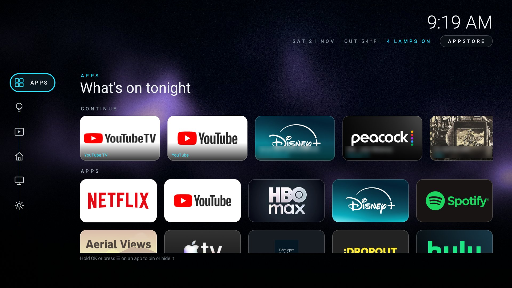
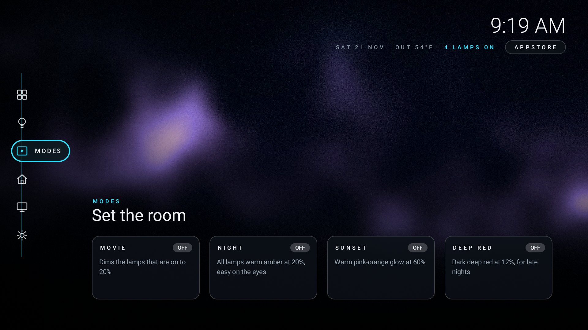
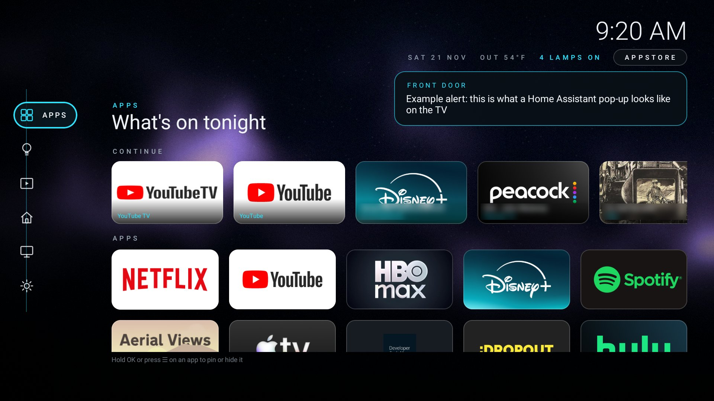
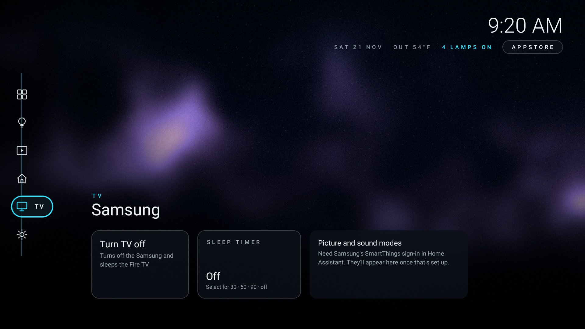

Fire TV HUD
I stripped the ads and tracking out of my Fire TV and replaced Amazon's home screen with my own launcher, which also controls the lights and shows alerts from my Home Assistant server.
Overview
My Fire TV Stick had turned into a billboard. The home screen was full of sponsored banners, the screensaver ran ads, and a dozen Amazon services were reporting what I watched. I wanted it clean, and I wanted the TV to be useful when nothing was playing. The result is a custom home screen that I call the HUD.
Cleaning up Fire OS
Working over Wi-Fi ADB, I uninstalled the apps I never used and disabled dozens of Amazon ad, tracking, and promo packages. Fire OS won't let you disable a few of its telemetry services, so I blocked their servers at the DNS level with AdGuard Home. After each change, I checked that every streaming app still played.
The HUD
The HUD is an Android app written in Kotlin with Jetpack Compose and built into a signed release APK. Fire OS ignores third-party launchers, so the HUD uses an accessibility service to catch the Home button and bring itself back to the front. It shows my apps in a grid with a glow in each app's brand color, a Continue row, and rotating wallpapers.
The side panels pull live data from my Home Assistant server. From the couch, I can dim or brighten each lamp, switch the whole room to a mode like Movie or Night, check on the house, and turn the TV off or set a sleep timer. Home Assistant alerts pop up in the corner without stopping whatever is playing.
Working within the hardware
The stick only has 2 GB of RAM, and after a couple of weeks of uptime, videos started freezing. I made the HUD's image decoding lighter and added Home Assistant automations that close background apps when the TV sleeps and restart it overnight. My Samsung TV also ignores the Fire TV's power signals, so a single "TV off" action now uses Wake-on-LAN and ADB to switch both off together, whether I press it on the HUD, my phone, or the wall tablet.
The HUD works hand in hand with my Home Assistant server, which runs the automations and supplies everything the panels show.
Screenshots




